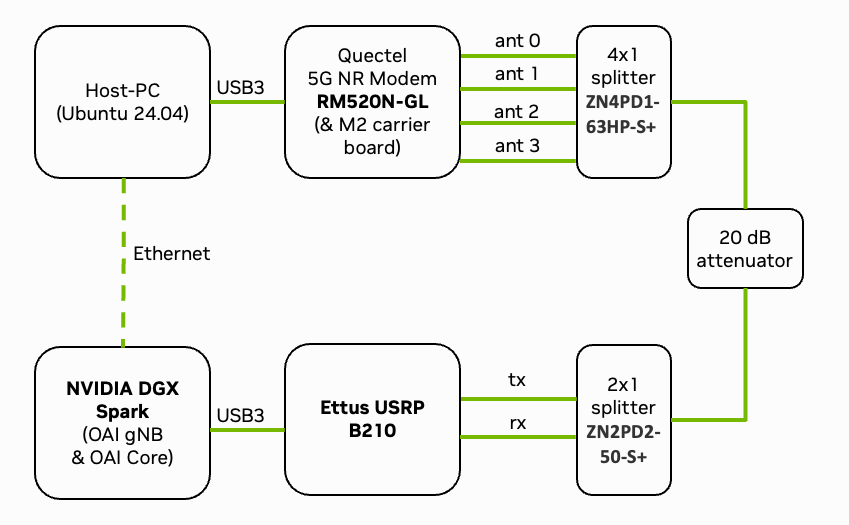

Quickstart#
By following this guide, you can set up your private software-defined 5G network in an afternoon using the Sionna Research Kit. The system allows you to connect commercial off-the-shelf (COTS) user equipment (UE), either via cable or over-the-air.
Warning
Ensure compliance with local RF spectrum regulations before conducting over-the-air experiments.
Note
If you have your DGX Spark (DGX OS 7.3 or later) or Jetson (Jetpack R36.3 or later) system ready and if you are experienced with OAI, the shortest path to get started is:
# Checkout the GitHub repository
git clone --recurse-submodules https://github.com/NVlabs/sionna-rk.git
cd sionna-rk
# Prepare system
make prepare-system
# Reboot
sudo reboot
# Build Sionna RK images and config
make sionna-rk
# You can now start the end-to-end system in the rf-simulator mode
./scripts/start_system.sh rfsim
# Or connect your USRP and run real transmissions.
# Note that you need to modify the .env file in the
# config/b200/ directory to set your USRP serial number
./scripts/start_system.sh b200
What follows is a more detailed sequence of steps, including hardware configuration details.
Hardware Requirements#
{kind=link}

Fig. 27 Overview of the deployed setup. See Ettus OAI reference architecture for details.#
Fig. 27 shows the setup of the Sionna Research Kit consisting of a USRP, a Quectel modem, and a DGX Spark. In the following, we will guide you through the steps to setup the system. The following components are required to run the Sionna Research Kit. Please refer to the Bill of Materials for detailed specifications:
Quectel RM520N-GLAA module connected to a host PC
RF cables, splitters/combiners, attenuators, and/or antennas
Connect the components as shown in Fig. 27. This means that the DGX Spark is connected to the USRP and the Quectel modem is connected to the host machine. Connect the UE and the USRP via RF cables and corresponding splitters/combiners. Note that an attenuator in-between the USRP and the UE is strongly recommended to protect the USRP from high power levels.
Step 1: DGX Spark Setup#
For DGX Spark, you need to install the latest DGX OS (7.3 or later).
If you want to run the Research Kit on the Jetson platform, please refer to the Jetson AGX Orin Setup or Jetson AGX Thor Setup setup guide.
Install the prerequisites:
sudo apt update
sudo apt install -y git
Clone the repository:
git clone --recurse-submodules https://github.com/NVlabs/sionna-rk.git
cd sionna-rk
Note
The following steps can also be executed via:
make prepare-system
Configure the system:
./scripts/configure-system.sh
sudo reboot
For testing and development, create a virtual environment and install Python packages:
python3 -m venv env
source env/bin/activate
pip install -r requirements.txt
# pip install -r requirements_thor.txt for Thor
# pip install -r requirements_orin.txt for Orin
Step 2: USRP Setup#
Install UHD drivers and verify the USRP connection:
# Run install script
./scripts/install-usrp.sh
# Verify connection
uhd_find_devices
uhd_usrp_probe
Note
Make note of your USRP’s serial number - you’ll need it later for configuration.
Note
Sometimes OAI gets confused if the USRP firmware is not loaded. In that case, run one of the uhd utilities to load the default firmware in the device, and retry.
Step 3: UE Setup#
The next step is the SIM Card Programming.
Connect the SIM card programmer, download the program_uicc tool from here and run the following commands:
# Note that the IMSI must be registered in config/common/oai_db.sql
# numbers below are already pre-registered in the OAI database
sudo ./program_uicc --adm 12345678 --imsi 262990100016069 \
--key fec86ba6eb707ed08905757b1bb44b8f \
--opc C42449363BBAD02B66D16BC975D77CC1
Insert SIM card into the Quectel modem and configure the modem on the host machine (see Quectel Modem Setup):
sudo mmcli -m 0 --enable
sudo nmcli c add type gsm ifname cdc-wdm0 con-name oai apn oai connection.autoconnect yes
Step 4: Deploy 5G Stack#

Fig. 28 Overview of the deployed 5G end-to-end stack with IP addresses and interfaces of each container. Figure from OpenAirInterface.#
Fig. 28 shows the block diagram of the complete system (see OpenAirInterface5G guide for more details). The 5G stack is deployed via Docker containers. The following steps build and deploy the core network components and the RAN components:
Note
The following steps can also be executed via:
make sionna-rk
# Pull, patch and build OAI containers
./scripts/quickstart-oai.sh
# Generate config files
./scripts/generate-configs.sh
# Build plugins specific components (e.g., TRT engines)
./plugins/common/build_all_plugins.sh --host
./plugins/common/build_all_plugins.sh --container
The system can be configured via environment variables. You can configure the system by editing the environment variables in the .env file in the config/b200/ or config/rfsim/ directory, respectively.
Edit config/b200/.env and set the following parameters:
Set your USRP serial number
Select the configuration file for desired number of PRBs (default is 24, equals 8.64MHz bandwidth)
And finally, you can start the system:
# For real hardware setup using the USRP
./scripts/start_system.sh b200
# Or for RF simulations without using real hardware
./scripts/start_system.sh rfsim
Monitor the system:
# Show running containers
docker ps -a
# View gNB logs
docker logs -f oai-gnb
The docker containers should be all in a “healthy” state and the gNB log should
indicate that the UE is successfully connected (in-sync).
Have Your First Call#
Congratulations, your system is now running and ready for your own experiments!
Verify connectivity on the host machine (using the Quectel modem):
# Check connection status
nmcli connection show
# Check that ip address is assigned to wwan0
ip addr show wwan0
# Test internet connectivity through the 5G tunnel
ping -I wwan0 google.com
This has been successfully tested on Raspberry Pi OS, for other distributions the Quectel QConnectManager might need to be installed manually.
Monitor system load:
# On DGX Spark
nvtop
# On Jetson
jtop
And run performance tests:
# If not already running, start iperf3 server in Docker container
docker exec -d oai-ext-dn iperf3 -s
# On the client (UE); you need to install iperf3 on the host machine
# Downlink test
iperf3 -u -t 1000 -i 1 -b 1M -B 12.1.1.2 -c 192.168.72.135 -R
# Uplink test
iperf3 -u -t 1000 -i 1 -b 1M -B 12.1.1.2 -c 192.168.72.135
# Change 1M to the desired throughput in Mbit/s
You can now have your first call over your private 5G network!
We hope that you have enjoyed this quickstart guide! For inspiration and as blueprint for your own experiments, you can now try the following precompiled tutorials:
Explore the GPU-Accelerated LDPC Decoding tutorial and learn about accelerated RAN
Learn about Plugins & Data Acquisition to generate training data for your own AI models
Discover the toolchain from training in Sionna to the Integration of a Neural Demapper in a real 5G network
Replace classical receiver signal processing with a neural network in the 5G NR PUSCH Neural Receiver tutorial
Check the Tutorials page for more info.
For a detailed configuration and troubleshooting, see the Setup guide or visit the GitHub Discussions.